One model
from design to site
一个模型
贯通设计与建造
A single digital model connecting architectural design, discipline coordination, construction detailing and project delivery. 以统一数字模型连接建筑设计、专业协同、施工深化与项目交付。
Tiangong Kaiwu develops digital construction software and delivers architectural design on it. Practice on real projects is consolidated into software products, AI tools and repeatable delivery standards, serving architectural design, engineering construction and professional education. 天宫开物是一家专注于数字建造软件研发与建筑设计交付的科技企业。我们将真实项目实践沉淀为软件产品、AI 工具和标准化交付能力，服务于建筑设计、工程建设及相关教育培训场景。
01 What we do我们做什么
Four businesses, one model 四条业务线，同一个模型
Software, delivery, AI and training are not separate products here. They share one data model, so what a designer draws becomes the drawing set, the quantity take-off and the cutting list without redrawing anything. 软件、交付、AI 与培训不是四件独立的产品，而是共用一套数据模型：设计师画的模型，直接成为施工图、工程量清单与下料单，无需二次绘制。
The platformDFC 平台
Six disciplines in one lightweight model. Clash detection, DWG documentation and the bill of quantities all come out of it — no export, no rebuild. 六大专业集成于同一轻量化模型。碰撞检查、DWG 出图与工程量清单全部由它导出，不转换、不重建。
Explore了解 →Design delivery设计交付
Four ways in: nested design on your existing drawings, forward design from scratch, on-site detailing with point cloud and robotic layout, or full construction management. 四种切入方式：基于既有图纸的嵌套设计、从零开始的正向设计、点云与机器人放线的现场深化，以及全过程施工管理。
Explore了解 →Tiangong TAI天宫 TAI
Our AI workspace for designers: concept imagery, plan rendering, analysis diagrams and agent workflows for architecture, interiors, landscape and urban design. 面向设计师的 AI 工作空间：概念表现、平面渲染、分析图与 Agent 工作流，覆盖建筑、室内、景观与城市设计。
tgtai.com →Tiangong Academy天宫课堂
Industry–education integration for colleges: the “post, course, contest, certificate” model, joint majors, labs and competition coaching — built on real project data. 面向院校的产教融合：岗课赛证一体化育人、共建专业与实训室、赛事辅导，全部基于真实项目数据。
Explore了解 →02 The numbers可验证的结果
What one model changes in programme, cost and quality 统一模型对周期、成本与质量的影响
The saving is not in modelling hours, which change little. It comes from the re-checking that follows every design change: seven categories of deliverable that previously had to be updated and verified separately, discipline conflicts surfacing on site rather than in review, and the rework they generate. 效率提升并不来自建模工时的压缩，而来自每次设计修改后的重复核对：过去需分别更新并逐份校验的七类成果、在现场而非评审阶段暴露的专业冲突，以及由此产生的返工。
- 85%+ Fewer design changes设计变更减少 Conflicts surface in the model review, not on site. 冲突在模型评审阶段暴露，而不是在现场。
- 40–60% Shorter programme开发周期缩短 Design, cost and procurement run in parallel instead of in sequence. 设计、成本与招采并行推进，而非逐段串行。
- 10–15% Lower build cost建造成本降低 Quantities come off the model, so the budget moves when the design does. 工程量由模型直出，设计一改，成本同步可见。
- 75%+ Less rework返工率下降 The model matches the building, so what is cut fits first time. 模型与现场一致，下料一次到位。
Source: Shenzhen Municipal Bureau of Public Works & THAD, Tsinghua University — comparative study of industrialised and traditional construction. 数据来源：深圳市建筑工务署 · 清华大学建筑设计研究院《工业化建造模式与传统建造模式数字化比较研究》课题
Hainan International Twin Centres: ¥200m in verified savings 海南国际双中心：节省投资约 2 亿元
Hainan International Twin Centres — the Zaha Hadid-designed art trading and cultural exchange complex. We cut the metal roof panel from 9,000+ specifications to 1,800+, coordinated every discipline to zero clashes, and closed the loop between design and construction. Around ¥200m saved, 16.7% of the project's total investment. 海南国际双中心——扎哈事务所设计的文物艺术品交易中心与国际文化交流中心。金属屋面板规格从 9000 余种优化至 1800 余种，全专业零碰撞，设计与施工闭环管理。合计节省约 2 亿元，占项目总投资的 16.7%。
- Guangzhou Yuexiwan. 1,740+ discipline conflicts resolved before construction; zero demolition, zero rework, model matched site 100%. 广州玥玺湾。施工前前置解决专业冲突 1740+ 条，零拆改、零返工，模型与现场 100% 吻合。
- Dongguan Museum. 874 issues closed out early; ceiling height gained 0.6 m in the main hall through cost-reducing changes. 东莞市博物馆。前置解决各专业问题 874 条；通过设计优化实现"负变更"，综合大厅净高提升 0.6 米。
- Chain rollouts. KFC: design cycle down 40–60%, changes down 99%+, opening a month earlier. Huazhu: 35 days to 15. 连锁品牌复制。肯德基：设计周期缩短 40–60%，变更减少 99%+，开业提前一个月。华住：35 天压缩至 15 天。
03 Why it works为什么成立
Software capability grounded in real project delivery 软件能力源于真实项目交付实践
Most BIM tools are built by vendors who carry no delivery responsibility on site. Software development and design delivery sit inside one company here: a 300-strong delivery team across Shenzhen, Shanghai, Beijing and Hangzhou uses the platform on live projects every day, and the constraints they meet in delivery become development requirements in the next release. 多数 BIM 工具的研发方并不承担工程交付责任。我们的软件研发与设计交付在同一家公司内完成：300 人的实施落地团队分布于深圳、上海、北京、杭州，每日在真实项目中使用该平台，交付过程中暴露的问题直接进入下一版本的开发需求。
- Lightweight by design. One project, one model — opens and navigates without a workstation upgrade. 轻量化。一个项目一个模型，打开浏览不卡顿，无需升级图形工作站。
- Model as deliverable. Drawings, quantity schedules, material take-offs and cutting lists all export from the same model. 一模多用。施工图、工程量清单、物料表、下料单，均由同一模型导出。
- Cloud coordination. Multi-company, multi-discipline, multi-stage review with mark-ups on the shared model. 云端协同。多公司、多专业、多阶段协作，模型审图可批注。
- Built on SketchUp. Your team already knows the interface; the BIM discipline is what we add. 基于 SketchUp。团队无需重学界面，我们补齐的是 BIM 能力。
04 Selected projects精选项目
Delivered on DFC 全部由 DFC 交付
Hotels, hospitals, headquarters, museums and stadiums across China — every one modelled, coordinated and documented on our own platform. 酒店、医院、总部、博物馆与体育场馆，遍布全国。每一个都在我们自己的平台上建模、协同与出图。
05 Trusted by服务客户
A project to deliver, or a team to equip? 有项目需要交付，或有团队需要工具？
Submit the project scope and programme; we respond with a technical approach and a delivery plan. 提交项目范围与计划周期，我们回复技术方案与交付安排。